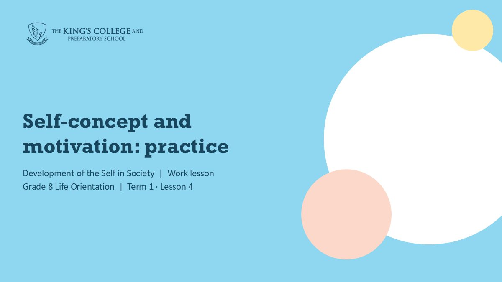

Term 1 · Lesson 4 · Work lesson: written practice
Self-concept and motivation: practice
Start here
Today I will
- Revise self-concept and motivation from my Handbook
- Answer IEB-style questions using the building blocks
- Mark my own work and plan how to improve
Quick quiz: what are the six influences on self-concept? What do the letters of SMART stand for?
Words to know
- Self-concept
- The picture you have of yourself.
- Self-esteem
- How much you value and respect yourself.
- Growth mindset
- Believing you can get better with effort and practice.
- SMART goal
- Specific, Measurable, Achievable, Relevant, Time-bound.
Slides

Notes
This lesson revises: Term 1 · Lesson 3: Self-concept and self-motivation. Read those notes first, then do the written practice.
Read the brackets, build the answer, then learn from your marking.
Written practice
Mia has just started Grade 8. In the evenings she scrolls through accounts of influencers with 'perfect' bodies and exciting lives. After her first high-school Maths test (48%) she said to herself: 'I'm just stupid at Maths. Everyone here is smarter than me.' Her friend Thabo reminded her that she battled with swimming in Grade 6, but made the team after practising every afternoon.
- 4.1Define the term 'self-concept'.(1 x 1) (1)
- 4.2Identify TWO influences on Mia's self-concept from the source.(2 x 1) (2)
- 4.3Differentiate between 'self-image' and 'self-esteem'.(1 x 2) (2)
- 4.4Explain how following 'perfect' influencers can affect a teenager's self-esteem.(1 x 2) (2)
- 4.5Rewrite Mia's self-talk so that it shows a growth mindset.(1 x 2) (2)
- 4.6Turn Mia's wish 'I want to do better in Maths' into a SMART goal.(1 x 2) (2)
- 4.7Assess how Thabo's reminder about swimming could change the way Mia approaches Maths.(1 x 4) (4)
Finished early?
Try exam-style questions on self-concept and motivation from the Term 1 exam practice bank.
- Turn to the Term 1 exam practice bank at the back of your Activity Book and find Set A: Me and my time.
- Answer the Self-concept and Self-motivation and goals questions. Read the brackets first.
- Mark your answers in green with the Term 1 exam practice memo on Google Classroom.
- Write one thing you will do differently in your next answer.